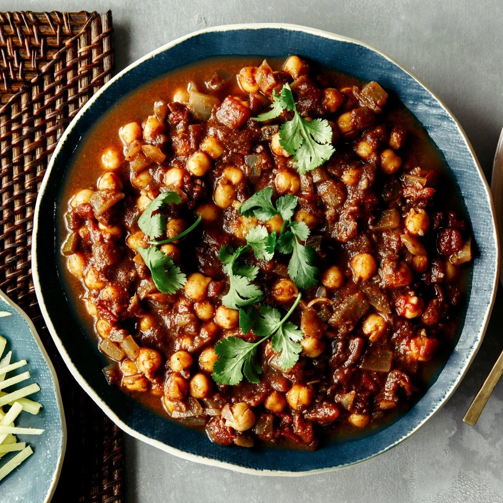

Mayin’s World is a special place created for all food lovers who enjoy exploring the rich and colorful taste of Indian cuisine. Our website is designed to celebrate the beauty of traditional food dishes that represent culture, happiness, and togetherness. At Mayin’s World, we believe food is not just something we eat, but it is an emotion that connects people from different backgrounds. From delicious Batani Pulao to crispy Dosa, soft Parathas, and many more homemade style dishes, we provide a variety of meals prepared with care and love. Our mission is to bring authentic flavors, fresh ingredients, and memorable dining experiences to everyone. This platform is also an effort to share knowledge about popular dishes, their ingredients, and the unique traditions behind them. Mayin’s World welcomes you to enjoy tasty food, discover new cuisines, and become part of a joyful journey filled with delicious moments.
Enjoy exciting offers every weekend at Mayin’s Food World!